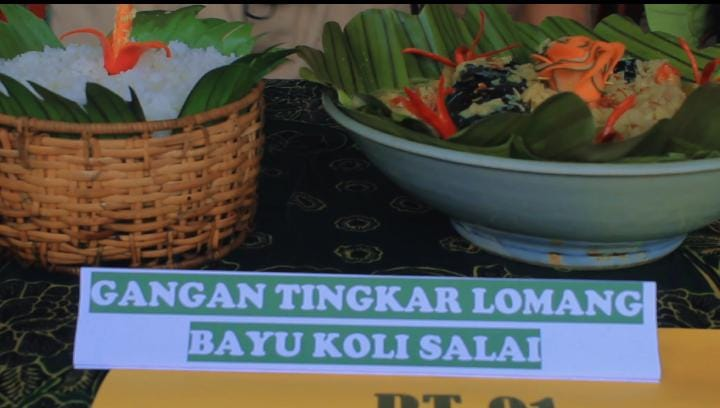

Makanan Tradisional
Gangan Tingkar Lomang Bayu Koli Salay merupakan salah satu kuliner tradisional khas Desa Penyombaan yang memadukan kekayaan alam dan cita rasa warisan leluhur. Lomang merupakan air ketan dari kelapa, memberi sensasi gurih lembut yang meresap hingga ke inti masakan. Koli Salay, yakni ikan lele yang diasap secara tradisional, menghadirkan aroma khas yang menggugah selera dengan tekstur daging yang legit. Sementara itu, Tingkar—humbut muda yang segar menambahkan rasa manis alami dan kerenyahan yang sempurna. Setiap suapannya seolah membawa kita menyelami kehangatan desa, serta mengingatkan kita tentang kesederhanaan masakan orang tua pada zaman dulu."